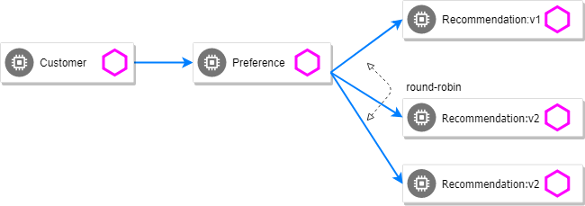
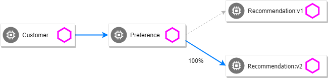
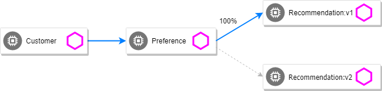

Simple Route Rules
This section demonstrates how to use various traffic management capabilities of Istio.
We will show you how to route requests dynamically to multiple versions of a microservice.
Deploy recommendation:v2
kubectl apply -f manifests/kubernetes/recommendation-v2.ymlWait for those pods to show "2/2", the istio-proxy/envoy sidecar is part of that pod
NAME READY STATUS RESTARTS AGE
customer-3600192384-fpljb 2/2 Running 0 17m
preference-243057078-8c5hz 2/2 Running 0 15m
recommendation-v1-60483540-9snd9 2/2 Running 0 12m
recommendation-v2-2815683430-vpx4p 2/2 Running 0 15s
and test the customer endpoint:
curl $CUSTOMER_URLyou would likely see "customer => preference => recommendation v1 from '99634814-d2z2t': 3", where '99634814-d2z2t' is the pod running v1 and the 3 is basically the number of times you hit the endpoint.
Run again the command:
curl $CUSTOMER_URLyou would likely see "customer => preference => recommendation v2 from '2819441432-5v22s': 1" as by default you get round-robin load-balancing when there is more than one Pod behind a Service
Send several requests to see their responses:
while true; do curl $CUSTOMER_URL; sleep .5; doneThe default Kubernetes behavior is to round-robin load-balance across all available pods behind a single Service. Add another replica of recommendation-v2 Deployment.

kubectl scale --replicas=2 deployment/recommendation-v2Now, you will see two requests into the v2 and one for v1.
customer => preference => recommendation v1 from '2819441432-qsp25': 29
customer => preference => recommendation v2 from '99634814-sf4cl': 37
customer => preference => recommendation v2 from '99634814-xq3c5': 38Scale back to a single replica of the recommendation-v2 Deployment
kubectl scale --replicas=1 deployment/recommendation-v2Changing Istio Routings
Before you can use Istio to control version routing, you need to define the available versions, called subsets, in DestinationRule.
kind: DestinationRule
metadata:
name: recommendation
spec:
host: recommendation
subsets:
- name: version-v1
labels:
version: v1
- name: version-v2
labels:
version: v2Run the following command to create default destination rules to send traffic to versions v1 and v2 of recommandation service.
kubectl apply -f manifests/istio/routing-simple/recommendation-destination-rule-v1-v2.ymlWait a few seconds for the destination rules to propagate.
You can display the created destination rule with the following command:
kubectl get destinationrules recommendation -o yamlTo display all destination rules :
kubectl get destinationrules -o yamlRoute all the traffic to recommendation:v2
To route to one version only, you apply virtual services that set the default version for the microservices. In this case, the virtual services will route all traffic to v2 of recommendation microservice.

kind: VirtualService
metadata:
name: recommendation
spec:
hosts:
- recommendation
http:
- route:
- destination:
host: recommendation
subset: version-v2
weight: 100kubectl apply -f manifests/istio/routing-simple/recommendation-virtual-service-v2.yml
curl $CUSTOMER_URLyou should only see v2 being returned
Route all the traffic to recommendation:v1

kubectl apply -f manifests/istio/routing-simple/recommendation-virtual-service-v1.ymlapiVersion: networking.istio.io/v1alpha3
kind: VirtualService
metadata:
name: recommendation
spec:
hosts:
- recommendation
http:
- route:
- destination:
host: recommendation
subset: version-v1Route the traffic to both versions of recommendation: v1 and v2
By simply removing the virtual service
kubectl delete virtualservice recommendationand you should see the default behavior of load-balancing between v1 and v2
curl $CUSTOMER_URLCanary deployment: Split traffic between v1 and v2
Canary Deployment scenario: push v2 into the cluster but slowly send end-user traffic to it, if you continue to see success, continue shifting more traffic over time

kubectl get pods -l app=recommendation
NAME READY STATUS RESTARTS AGE
recommendation-v1-3719512284-7mlzw 2/2 Running 6 2h
recommendation-v2-2815683430-vn77w 2/2 Running 0 1hCreate the virtualservice that will send 90% of requests to v1 and 10% to v2
kubectl apply -f manifests/istio/routing-simple/recommendation-virtual-service-v1_and_v2.ymlkind: VirtualService
metadata:
name: recommendation
spec:
hosts:
- recommendation
http:
- route:
- destination:
host: recommendation
subset: version-v1
weight: 90
- destination:
host: recommendation
subset: version-v2
weight: 10and send in several requests:
while true; do curl $CUSTOMER_URL; sleep .5; doneIn another terminal, change the mixture to be 75/25
kubectl apply -f manifests/istio/routing-simple/recommendation-virtual-service-v1_and_v2_75_25.yml